整理一下昨天学习的泛型,有不对的地方欢迎指正:
定义一个类,这个类中某些字段的类型不确定,这些类型可以在构造类时确定下来
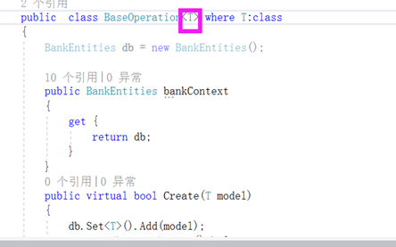
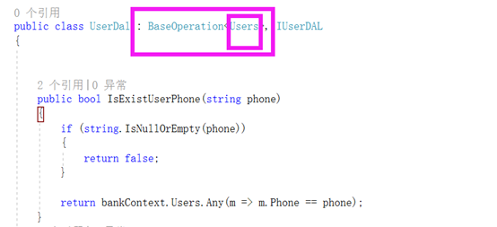
2.泛型方法
泛型方法就是定义一个方法,这个方法的参数类型可以是不确定的,当调用这个方法时再去确定这个方法参数的类型。
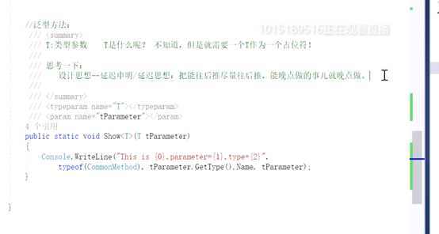
T作为类型参数也是一个占位符在泛型中,例:
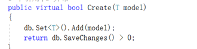
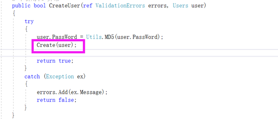
3.泛型解析:
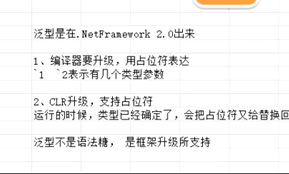
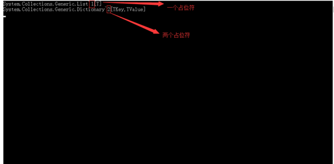
在编译器解析泛型的时候会用占位符去表达有几个类型参数比如~1是1个类型参数T,~2是两个类型参数TKey,TValue，在CLR解析运行的时候具体参数类型已经确定,会把占位符替换成具体参数类型
4.泛型与Object:
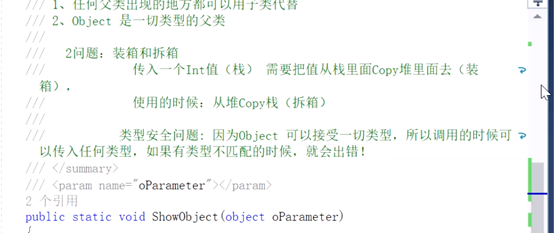
由其他值类型到object,系统会自动装箱,拆箱操作,需要操作堆和栈会对系统性能产生影响,若处理引用类型,必须要进行类型强制转化,也会产生一定的影响,有可能因为类型的强制转化出现错误。
泛型方法效率最高>普通方法>object方法
5.泛型约束:
定义泛型类时,作为对类型参数的几种类型施加限制,如果尝试使用约束不允许的类型实例化类,则会产生编译时错误,这些限制成为约束.通过where上下文关键字指定约束。
where T:类:基类不是是密封的,密封类不能被继承,加约束毫无意义
where T：new()（类型参数必须具有无参数的公共构造函数。当与其他约束一起使用时，new() 约束必须最后指定。）
注意：有多个泛型约束时，new()约束一定是在最后,泛型类型不能继承多个基类可以继承多个接口。
基类约束:
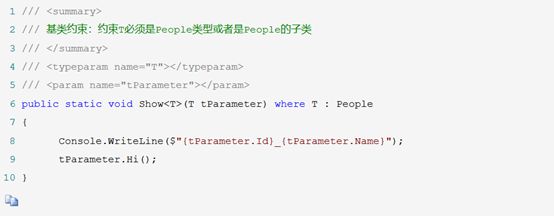
引用类型约束:
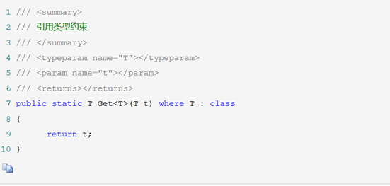
值类型约束:
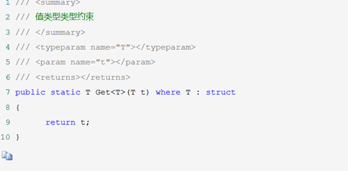
new()约束:
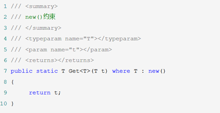
多个泛型约束:
public static void Show<T>(T tParameter)
where T : People, ISports, IWork, new()
{
}
6.泛型缓存:
类中的静态类型无论实例化多少次,在内存中只会有一个,静态构造函数只会执行一次,在泛型类中,T类型不同，每个不同的T类型,都会产生一个不同的副本,所以会产生不同的静态属性,不同的静态构造函数
注意:只能为不同的类型缓存一次.泛型缓存比字典缓存效率高。泛型缓存不能主动释放。